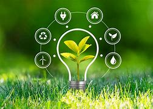
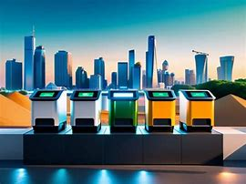
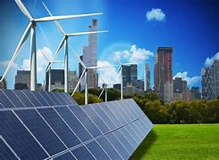
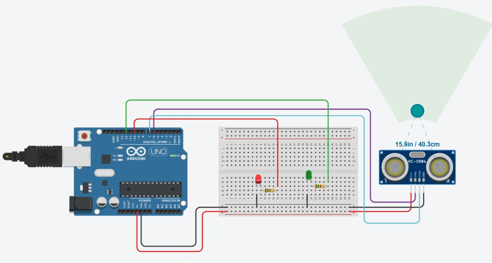
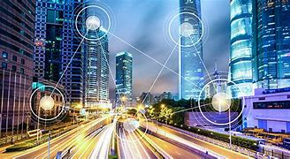

Como Funciona
Nosso sistema utiliza sensores ultrassônicos instalados em lixeiras públicas para medir o nível de enchimento dos recipientes. Esses sensores identificam a distância entre o topo da lixeira e o lixo presente. Quando a distância é inferior a 10 cm, considera-se que a lixeira está cheia. Nesse momento, um LED vermelho é acionado e um sinal de alerta é enviado automaticamente para o centro de coleta.
Essa automatização permite maior agilidade na coleta de resíduos, evitando transbordamentos e otimizando rotas de coleta. Além disso, os dados coletados podem ser armazenados para análises preditivas e planejamento de estratégias de limpeza urbana.
 Tecnologias Utilizadas
- Arduino UNO – microcontrolador central do sistema
- Sensor Ultrassônico HC-SR04 – mede a distância entre o lixo e o sensor
- LEDs (vermelho e verde) – sinalização visual de status da lixeira
- Protoboard e jumpers – montagem dos circuitos eletrônicos
- Plataforma de simulação: Tinkercad – testes e simulação virtual do sistema
Essas tecnologias permitem criar soluções de baixo custo com grande aplicabilidade no mundo real, demonstrando como a eletrônica pode contribuir com a sustentabilidade.
 Benefícios Ambientais
A implementação desse projeto proporciona diversos benefícios ambientais diretos e indiretos:
- Evita o acúmulo de lixo em vias públicas, promovendo mais higiene urbana
- Reduz a emissão de gases poluentes ao otimizar as rotas dos caminhões de coleta
- Contribui para a redução de animais transmissores de doenças, como ratos e baratas
- Ajuda no uso eficiente dos recursos públicos destinados à limpeza
- Fomenta a conscientização sobre o descarte correto de resíduos
Aplicação em Cidades Inteligentes
O projeto se alinha aos princípios das cidades inteligentes, integrando dados e automação aos serviços urbanos. A coleta em tempo real permite aos gestores identificar pontos críticos de descarte irregular e avaliar o comportamento dos cidadãos em relação ao uso das lixeiras.
Além disso, é possível implementar painéis de controle que centralizam os dados de todas as lixeiras monitoradas, facilitando a tomada de decisão e a elaboração de políticas públicas mais eficazes.
A longo prazo, a coleta inteligente de resíduos pode ser integrada a outras soluções, como iluminação pública automatizada, sensores de qualidade do ar e aplicativos para educação ambiental.
Vídeo Explicativo
Assista ao vídeo completo do projeto no YouTube para entender melhor como funciona o sistema e quais impactos ele pode gerar: